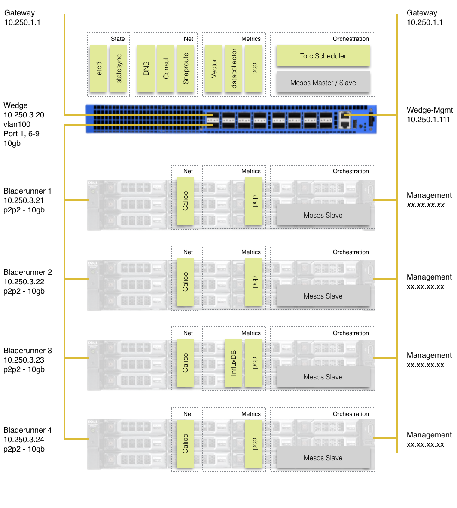

Installation Overview
All the scripts and all the documentation provided is based on the following setup.

Prepare your local machine
To simplify interaction with this specific setup we suggest to add following entries to the local /etc/hosts file.
10.250.1.111 wedge-mgmt
10.250.3.20 wedge wedge.homer.ave
10.250.3.21 bladerunner1 bladerunner1.homer.ave
10.250.3.22 bladerunner2 bladerunner2.homer.ave
10.250.3.23 bladerunner3 bladerunner3.homer.ave
10.250.3.24 bladerunner4 bladerunner4.homer.ave
Provision Wedge
Installation of OS, Network Agent, and Docker runtime on the Wedge switch.
Configure SnapRoute
Configuration of ports, interfaces, and vlan according to our demo setup.
Install ToRC Core
Installation of the ToRC Core Services like Mesos, etcd, ToRC Scheduler, or DNS.
Provision Compute Node
Provision the compute nodes with the ToRC base software like Mesos, Calico, or pcp.
Restart Scheduler
Restart ToRC Scheduler with full the full set of features and services.
Explore ToRC Services
Let’s explore the ToRC Core Services.